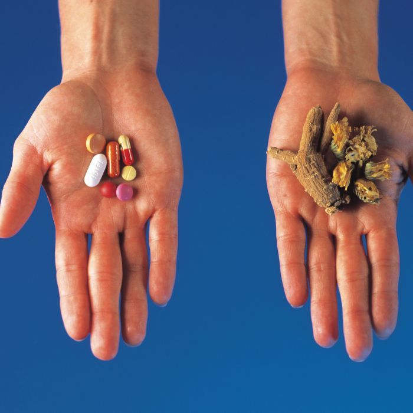

Alternative Medicine in Australia
The first students to study alternative medicine at university level in Australia began their four-year, full-time course at the University of Technology, Sydney, in early 1994. Their course covered, among other therapies, acupuncture. The theory they learnt is based on the traditional Chinese explanation of this ancient healing art: that it can regulate the flow of ‘Qi’ or energy through pathways in the body. This course reflects how far some alternative therapies have come in their struggle for acceptance by the medical establishment.
Australia has been unusual in the Western world in having a very conservative attitude to natural or alternative therapies, according to Dr Paul Laver, a lecturer in Public Health at the University of Sydney. ‘We’ve had a tradition of doctors being fairly powerful and I guess they are pretty loath to allow any pretenders to their position to come into it.’ In many other industrialized countries, orthodox and alternative medicines have worked ‘hand in glove’ for years. In Europe, only orthodox doctors can prescribe herbal medicine. In Germany, plant remedies account for 10% of the national turnover of pharmaceutical. Americans made more visits to alternative therapist than to orthodox doctors in 1990, and each year they spend about $US 12 billion on the therapies that have not been scientifically tested.
Disenchantment with orthodox medicine has seen the popularity of alternative therapies in Australia climb steadily during the past 20 years. In a 1983 national health survey, 1.9% of people said they had contacted a chiropractor, naturopath, osteopath, acupuncturist or herbalist in the two weeks prior to the survey. By 1990, this figure had risen to 2.6% of the population. The 550,000 consultations with alternative therapists reported in the 1990 survey represented about an eighth of the total number of consultations with medically qualified personnel covered by the survey, according to Dr Laver and colleagues writing in the Australian Journal of Public Health in 1993. ‘A better educated and less accepting public has become disillusion with the experts in general and increasingly skeptical about science and empirically based knowledge,’ they said. ‘The high standing of professionals, including doctors, has been eroded as a consequence.’
Rather than resisting or criticizing this trend, increasing numbers of Australian doctors, particularly younger ones, are forming group practices with alternative therapists or taking courses themselves, particularly in acupuncture and herbalism. Part of the incentive was financial, Dr Laver said. ‘The bottom line is that most general practitioners are business people. If they see potential clientele going elsewhere, they might want to be able to offer a similar service.’
In 1993, Dr Laver and his colleagues published a survey of 289 Sydney people who attended eight alternative therapists’ practices in Sydney. These practices offered a wide range of alternative therapies from 25 therapists. Those surveyed had experience chronic illnesses, for which orthodox medicine had been able to provide little relief. They commented that they liked the holistic approach of their alternative therapists and the friendly, concerned and detailed attention they had received. The cold, impersonal manner of orthodox doctors featured in the survey. An increasing exodus from their clinics, coupled with this and a number of other relevant surveys carried out in Australia, all pointing to orthodox doctors’ inadequacies, have led mainstream doctors themselves to begin to admit they could learn from the personal style of alternative therapists. Dr Patrick Store, President of the Royal College of General Practitioners, concurs that orthodox doctors could learn a lot about beside manner and advising patients on preventative health from alternative therapists.
According to the Australian Journal of Public Health, 18% of patients visiting alternative therapists do so because they suffer from musculo-skeletal complaints; 12% suffer from digestive problems, which is only 1% more than those suffering from emotional problems. Those suffering from respiratory complaints represent 7% of their patients, and candida sufferers represent an equal percentage. Headache sufferers and those complaining of general ill health represent 6% and 5% of patients respectively, and a further 4% see therapists for general health maintenance.
The survey suggested that complementary medicine is probably a better term than alternative medicine. Alternative medicine appears to be an adjunct, sought in times of disenchantment when conventional medicine seems not to offer the answer.
Questions 1-2
Choose the correct letter, A, B, C or D.
Write your answers in boxes 1-2 on your answer sheet.
1 Traditionally, how have Australian doctors differed from doctors in many Western countries?
A They have worked closely with pharmaceutical companies.
B They have often worked alongside other therapists.
C They have been reluctant to accept alternative therapists.
D They have regularly prescribed alternative remedies.
2 In 1990, Americans
A were prescribed more herbal medicines than in previous years.
B consulted alternative therapists more often than doctors.
C spent more on natural therapies than orthodox medicines.
D made more complaints about doctors than in previous years.
Questions 3-10
Do the following statements agree with the views of the writer in Reading Passage?
In boxes 3-10 on your answer sheet write
YES if the statement agrees with the views of the writer
NO if the statement contradicts the views of the writer
NOT GIVEN if it is impossible to say what the writer thinks about this
3 Australians have been turning to alternative therapies in increasing numbers over the past 20 years.
4 Between 1983 and 1990 the numbers of patients visiting alternative therapists rose to include a further 8% of the population.
5 The 1990 survey related to 550,000 consultations with alternative therapists.
6 In the past, Australians had a higher opinion of doctors than they do today.
7 Some Australian doctors are retraining in alternative therapies.
8 Alternative therapists earn higher salaries than doctors.
9 The 1993 Sydney survey involved 289 patients who visited alternative therapists for acupuncture treatment.
10 All the patients in the 1993 Sydney survey had long-term medical complaints.
Questions 11-13
Complete the vertical axis on the table below.
Choose NO MORE THAN THREE WORDS from Reading Passage for each answer.
Write your answers in boxes 11-13 on your answer sheet.

11
12
13
---End of the Test---
Please Submit to view your score, solution and explanations.